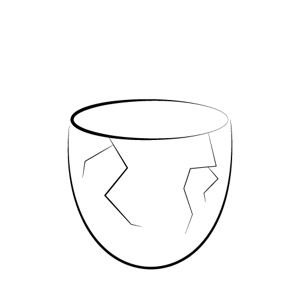

Despite the Muromachi period in Japan being politically tumultuous, it's economony and art were able to experience a time of flourishing growth. Many art movements that began during this era endure and continue to garner interest with the public to this day.
Introductory paragraph on the the basic ideas of wabi and sabi, which largely go hand-in-hand with one another
Introductory paragraph on Shibui
Introductory paragraph on Shibui